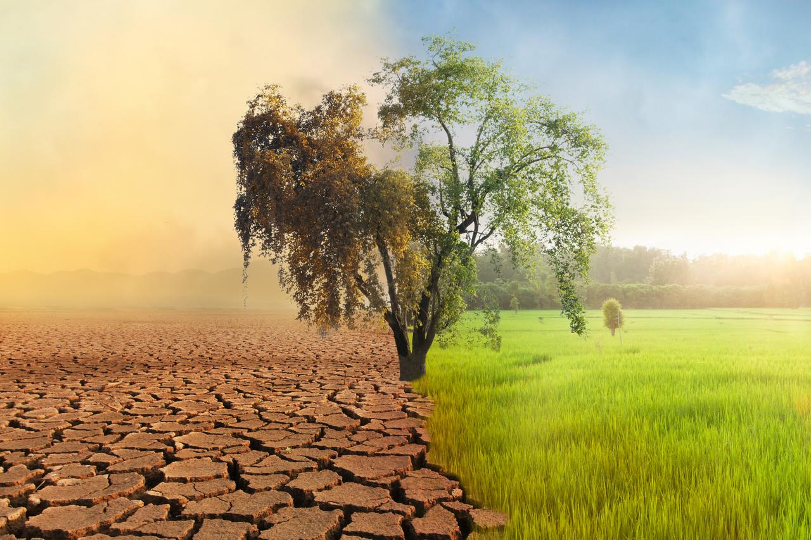

Conoce sus causas, tipos y la importancia de proteger nuestro planeta.
Definición

El cambio climático es la modificación a largo plazo de las temperaturas y de los patrones climáticos del planeta. Aunque estos cambios pueden producirse de forma natural, en la actualidad se deben principalmente a las actividades humanas, como la quema de combustibles fósiles, la deforestación y las emisiones de gases de efecto invernadero.
🌍 Cada pequeña acción cuenta. Cuidar el medio ambiente es responsabilidad de todos.
Tipos de Cambios Climáticos
Calentamiento global: incremento de la temperatura media del planeta.
Sequías prolongadas: disminución de las precipitaciones durante largos períodos.
Inundaciones extremas: aumento de lluvias intensas y desbordes de ríos.
Olas de calor: períodos con temperaturas excepcionalmente elevadas.
Tormentas y huracanes más intensos: fenómenos meteorológicos cada vez más severos.
Deshielo de glaciares: pérdida acelerada de hielo en los polos y montañas.
Elevación del nivel del mar: consecuencia del deshielo y del aumento de la temperatura del océano.
Desertificación: degradación de tierras fértiles hasta convertirse en zonas áridas.
Causas del Cambio Climático
Quema de combustibles fósiles.
Deforestación y destrucción de bosques.
Emisiones industriales.
Uso excesivo de vehículos que funcionan con gasolina o diésel.
Ganadería intensiva y emisión de metano.
Contaminación del aire, el agua y el suelo.
Crecimiento urbano descontrolado.
Consumo excesivo de recursos naturales.
Video Explicativo
El siguiente video explica de forma sencilla qué es el cambio climático,
cuáles son sus principales causas, sus consecuencias y las acciones
que podemos realizar para contribuir al cuidado del medio ambiente.